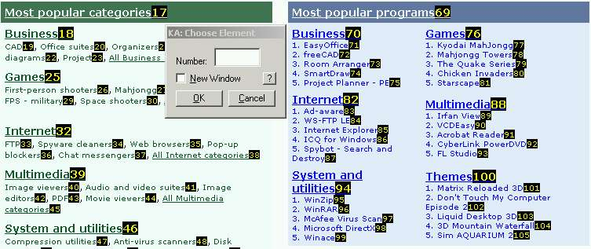

KeyboardAccess for IE
By Amit Schreiber
What Is KeyboardAccess for IE
KeyboardAccess is an Internet Explorer add-on (or Browser Helper Object, BHO, in the Microsoft terminology).
KeyboardAccess is intended to help the user browse the World Wide Web without using the mouse. It does
its job by numbering the links on a web page, and allowing the user to browse to a link by
entering the link's number, which is attached to it by KeyboardAccess.
Download
Improtant Notes:
- The installation must be done by a user of the administration group of the machine it's
being installed on. After the installation all users will be able to use KeyboardAccess.
- If you're upgrading from a previous version of KeyboardAccess, remove it first using the
control panel's Add/Remove Programs menu. If KeyboardAccess's uninstallation says at the end
of the uninstall that some files will be removed during the next reboot of the computer,
then install the new version only after rebooting your computer!
The download is done using SourceForge.net mirrors:
Download KeyboardAccess
Documentation
It is recommended to read the "How To Use" section before using KeyboardAccess.
KeyboardAccess Documentation
Screenshot

Contribute
If you wish to contribute in any way - code, comments, suggestions - please go to the KeyboardAccess
project page at SourceForge.net:
KeyboardAccess Project Page
This website is kindly hosted at SourceForge.net.